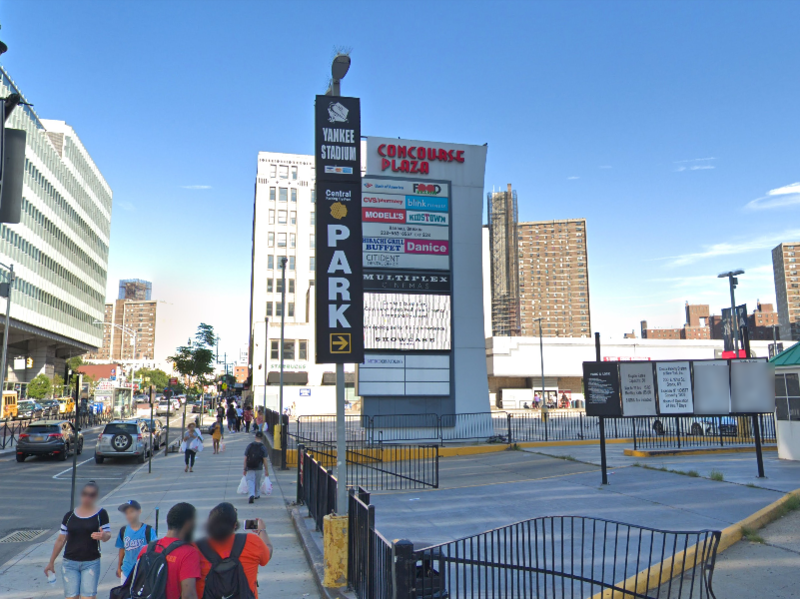

Now a little about my past, In elementary school, I was always on time because my school was so close to my house, giving me an advantage over other students. On my first senior trip, I went to Kent, Conneticut and stayed there for 3 hours and it was so memorable because it was the first time I've had a big trip where it required me to get on a coach bus at 7:30 A.M.When I was little I used to love going to the park because I got to play what was my favorite sport at the time,soccer. I also used to love going to the park because in the summer, the ice cream woman/man would come around with his/her cart and I would always get one and It would also taste so good!! Another one of my hobbies was to watch sports with my brothers(as i said in the first paragraph).I remember watching the 2016 and 2019 NBA Finals in my brothers room and it was such an enjoyable moment for all of us.
I've lived in the Bronx for all my life and it is one of the most unique places in New York and for many reasons. It has caused me to learn the new the "New York Language", the pace of the people of New York and how to talk to certain people such as your friends, the person or people at the grocery store and tourists. As the years cone and go, I've become more and more responsible for the things that I do such as choosing to wake up on time for 5 days straight just to go to school on time, what I eat in a day, how I handle schoolwork and more. There will be more moments in my life that I will experience that I will find either interesting or feel that it needed to be written down so I don't forget them, but for now, I'll just live the life how I've been doing it for the past 14 years with more maturity and awareness.
